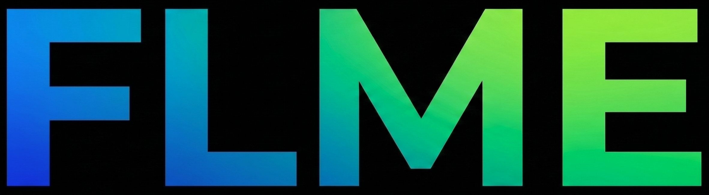
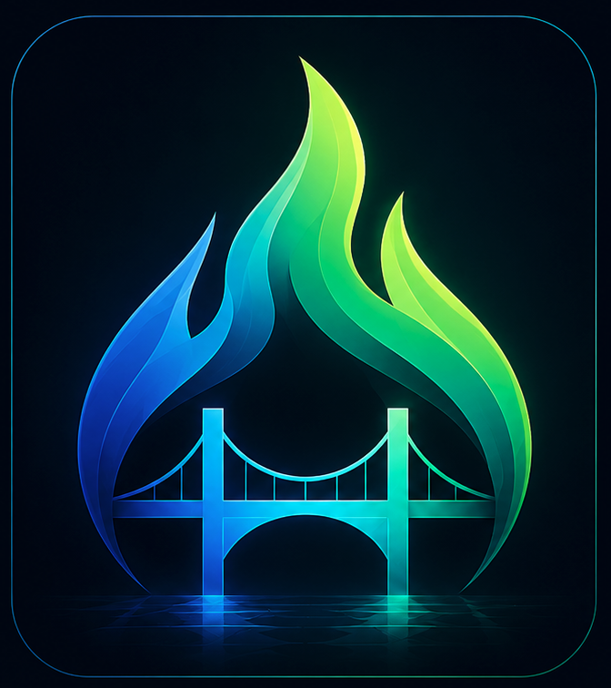
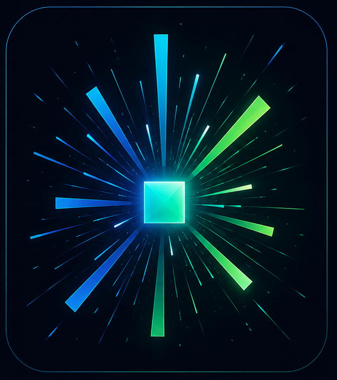

FLME is a high-performance software engineering firm. We build, deploy, and scale critical digital architecture utilizing a dual-engine development paradigm designed for complex operational environments.
Our Dual-Engine Engineering Paradigm
We solve the twin challenges of modern software delivery: unifying fragmented legacy systems and engineering blazing-fast modern application features.

First and Last Mile Connected by Engineering
Complex enterprises rarely suffer from a lack of data; they suffer from fragmented logic between core infrastructure and edge operations.

Igniting Transformation into Enterprise Applications
A backend is only as valuable as the capabilities it unlocks. Our Spark layer represents high-intensity feature delivery—building responsive, safe user systems directly on top of legacy architectures.
Designed for Zero Downtime
We don't build software that requires constant maintenance triage. Our code bases are tailored for heavily monitored, high-stress operating environments where security and logic execution are non-negotiable.
Engineered from day one with data-handling lineage and auditing constraints explicitly baked into the functional model layers.
Sub-millisecond data translation routing designed to pipeline high concurrent system traffic without operational deadlocks.
Built by Engineers, Trusted by Executives
FLME was built to address the friction points that stall modern enterprise digital evolution. By explicitly untangling legacy network mapping (Bridge) from high-velocity product execution (Spark), we deliver production-ready code on accelerated timelines while preserving deep data platform integrity.
Schedule a system design overview or a technical exploratory briefing with our lead architects.